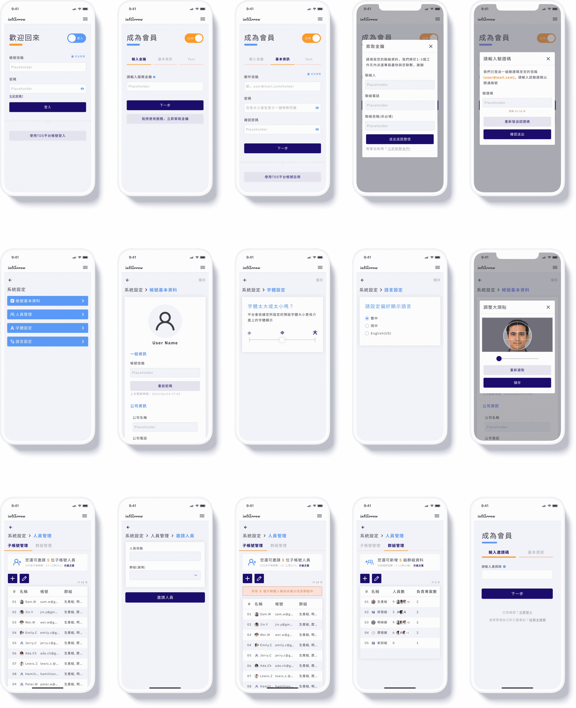
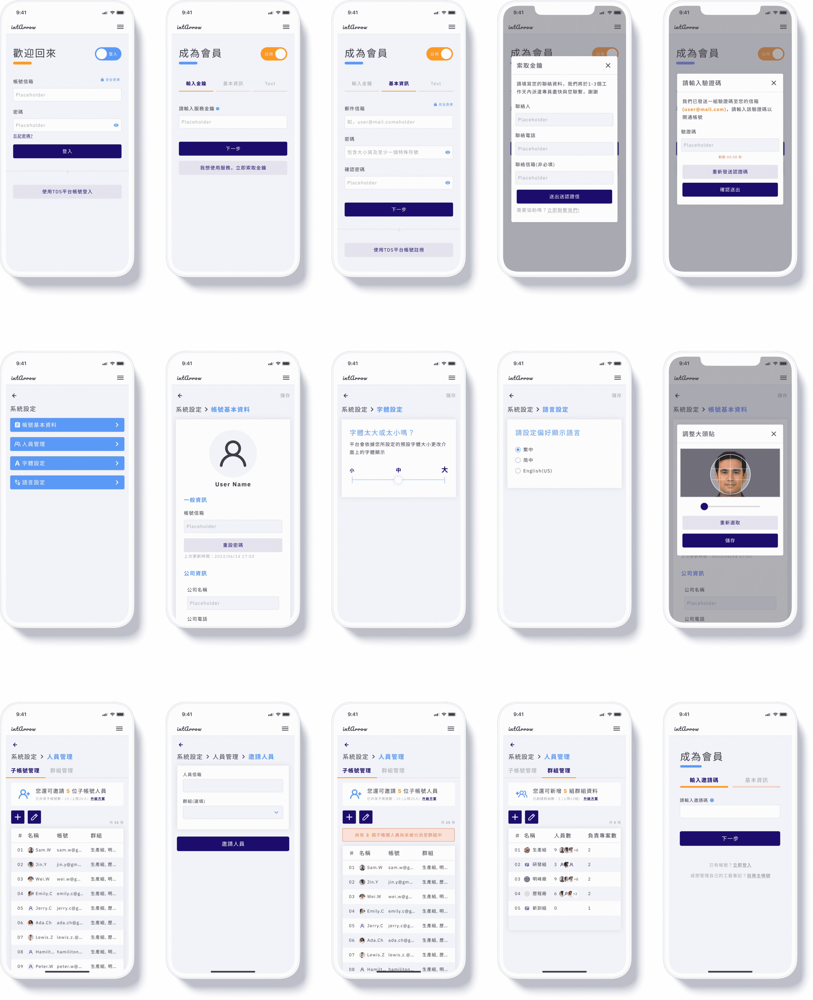

About this Project:
MoldMate Pro is the tool that helps plastic injection machine operators set up the proper injection parameters with ease and precision. It also allows operators to record technical knowledge for easy sharing and future reference. With MoldMate Pro, users can streamline their processes, reduce costs, and improve product quality.
Main Goal & Purpose:
New Product Building
Duration:
2022.03 ~ 2022.09 (6 months)
My Responsibility:
User Research, Product Design and Consulting
What’s the problem we aim to solve:
In Taiwan, the process of setting parameters for plastic injection is a highly skilled technique that heavily relies on personal experience. Unfortunately, this knowledge is often only stored in the master's memory and not systematically recorded and analysed on paper. As a result, it becomes difficult to pass on this knowledge and experience to future generations.
With the number of young masters in this field decreasing and the older generation approaching retirement, it is increasingly urgent and necessary to find a way to preserve and pass on this valuable expertise.
Our goal was to provide a way to systematically record and analyse the setting of injection parameters, and we aim to ensure that this valuable knowledge is not lost and can be shared effectively among generations.
When I joined the team, the team had already developed a product plan to assist users in setting up injection parameters on machines. However, they were uncertain whether this approach was the most effective one, and that's where I came in.
We used the very beginning prototype and let participants try it, and we found some issues:
We realised that if the product only provided parameter recommendations, it would not be attractive to users because:
To address these issues and make our product part of their daily tool and habit in their work, I introduced the Nir Eyal Hook Model to the team, which I believed could help us find our opportunity.
We identified that our product lacked investment steps in the Hook Model, and users might easily abandon it after finding alternative solutions. By using the Hook Model, we could design the product to have a more engaging user experience and retain users' attention.
At that moment, we knew MoldMate Pro should not be just an Injection Parameter Generator but rather a valuable E-notebook, where users can not only generate injection parameters with ease and precision, but they can also record and share technical knowledge, reference previous work, and find suggested parameters.
These additional features make MoldMate Pro a versatile tool that streamlines processes, reduces costs, and improves product quality, while also keeping users engaged and invested in the product.
After having a solid idea of how we wanted our product to be, we started to define our product strategy.
We also use How Might We statement as a problem statement that is framed in a way that encourages ideation and creative thinking. And here are 4 statements that we use:
With these ideas in mind, we created a very simple persona for three of our primary users.
As the user story map shows the whole journey our users would take in our product, we've divided this journey into four stages of development and released versions.
Released Version 1:
For the first version, our main priority was to create a valuable E-notebook. This E-notebook would allow users to easily and accurately generate injection parameters. In addition, users could record and share technical knowledge, refer back to previous work, and access suggested parameters.
To achieve this goal, we decided to release a free version of our product. The primary focus of this version was to generate suggested parameters and enable users to create projects where they could record their findings and provide feedback throughout the production process.
Released Version 2:
Our second and third versions of the product build upon the must-have features of the first version by including additional nice-to-have features. These new features enhance the user experience and make our product even more complete.
Some of the features included in these versions are the basic signup workflow, which makes it easier for users to create an account and get started. Additionally, we added the ability for users to invite and share with other members, making collaboration easier and more efficient.
 

As the outsourced product designer, my primary task was to create a prototype that would soon undergo user testing. However, before doing so, I recognised the importance of preparing handoff documents for other core members of the team. At this stage, the team did not have any in-house designers, and I knew that this would be critical for future designers to take over the project more seamlessly.
To ensure that the design would be consistent and that knowledge sharing would be more accessible, I decided to create a design system. This system would allow for a more structured approach to design and enable everyone on the team to work together effectively. By doing this, we could ensure that all future designs would remain consistent, regardless of who was working on the project.
I began by developing a style guide. The style guide acted as a comprehensive reference point for all design elements, including typography, colour palettes, iconography, and UI components. This ensured that all team members were working from the same guidelines and that the design remained cohesive throughout the project.

A sneak peek at part of the element in the MoleMate Pro Design System
Next, I developed design templates that could be easily adapted and applied to different areas of the project. This included templates for landing pages, user flows, and interactive elements such as buttons and forms.
A sneak peek at part of the element in the MoleMate Pro Design System
A sneak peek at part of the element in the MoleMate Pro Design System
Overall, I'm incredibly proud of the product our team has developed. Our goal was to address the pain points experienced by operators and mold tryout specialists in the plastic injection molding and tooling industry, and I believe we've done just that.
By reducing the time and material costs associated with parameter setting and adjusting, while improving quality control and standardisation, we've created a product that has the potential to revolutionise the industry and improve efficiency for factories around the world.
While the time limit of the contract prevented me from conducting usability testing and measuring success metrics with the team, I'm confident that the product we've designed will meet the needs of our users and contribute to their success if the team keep refining the product and always thinking about our users.
This project was a valuable learning experience for me as an outsourced product designer and consultant. I was able to collaborate effectively with the team and lead the development of a design system from scratch, which I'm particularly proud of.
Looking ahead, I'm excited to see the product in action. I'm confident that this product will make a positive impact on the industry and improve the lives of those who rely on it.